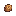
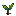
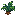
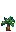
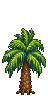
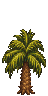
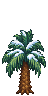
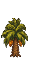

Butiazeiro
Da Vale das Araucárias Wiki
O Butiazeiro (Butia eriospatha) é uma das seis árvores regionais do mod. É uma árvore silvestre adicional: não substitui nenhuma árvore do jogo nem altera mapas.
Conteúdo
Crescimento

Estágio 1
Semente
Estágio 2
Broto
Estágio 3
Muda
Estágio 4
Jovem
Estágio 5
Adulta
A cada dia, a árvore tem 15% de chance de avançar um estágio (100% com fertilizante de árvore). Não cresce no inverno. As duas fases jovens maiores usam o mesmo desenho, como nas árvores silvestres do jogo.
Aparência por estação

Primavera Verão 
Outono 
Inverno 
Verão, com cachos 
Outono, com cachos
A árvore é perene: mantém as folhas no inverno, com neve. A variação por estação é só visual e não altera a produção.
Enquanto não é sacudido, o butiazeiro aparece com os cachos de butiá; depois de sacudido, os cachos somem.
Semente
 Caroço de Butiá: Caroço duro do butiá. Plante para nascer um butiazeiro.
Caroço de Butiá: Caroço duro do butiá. Plante para nascer um butiazeiro.
- Carpintaria da Robin: 150g.
- Carrinho de Viagem: 150g (25% de chance em cada dia de carrinho; preço fixo).
- Da própria árvore adulta: 5% de chance ao sacudir e 75% ao cortar. A árvore também espalha sementes sozinha (15% de chance por dia).
- Fabricação: 1 Butiá → 1 Caroço de Butiá (receita liberada no nível 1 de coleta).
Produção
Torneirinha
O mod não define produto de torneirinha para esta árvore.
Ao sacudir
Ao cortar
| Item | Quantidade | Condição |
|---|---|---|
| Seiva | 5 | árvore adulta |
| Seiva | 1 | ao cortar o toco |
| Butiá | 1 a 3 | árvore adulta; verão; 50% de chance |
| Butiá | 1 a 2 | árvore adulta; outono; 50% de chance |
Madeira (quantidade padrão do jogo); madeira de lei com a profissão Lenhador.
Itens
Caroço de Butiá

- Descrição: Caroço duro do butiá. Plante para nascer um butiazeiro.
- Categoria: Semente
- Preço de venda: 15g
- Comestível: Não
- ID:
ValeAraucarias_ButiaSeed
Butiá

- Descrição: Fruto amarelo, doce e suculento do butiazeiro. Pode ser comido ou virar geleia e vinho.
- Categoria: Fruta
- Preço de venda: 45g
- Comestível:
 30 ·
30 ·  13
13 - ID:
ValeAraucarias_Butia
Também aparece na coleta da Montanha no verão (30%) e no outono (20%), e vira Caroço de Butiá na bancada de fabricação.
| Qualidade | ||
|---|---|---|
| Normal | 30 | 13 |
| 42 | 18 | |
| 54 | 24 | |
| 78 | 35 |
Curiosidades
- Nome científico usado como referência para a arte: Butia eriospatha.
- A arte das quatro estações, das fases de crescimento, do toco e dos itens foi feita para o mod na versão 1.5.0.
Histórico
- 1.5.0: arte própria das seis árvores regionais.
- 1.7.0: o mod passou a ter só as seis árvores regionais; as versões de árvore frutífera foram retiradas.
- 1.8.1: sem mudanças nos dados das árvores.